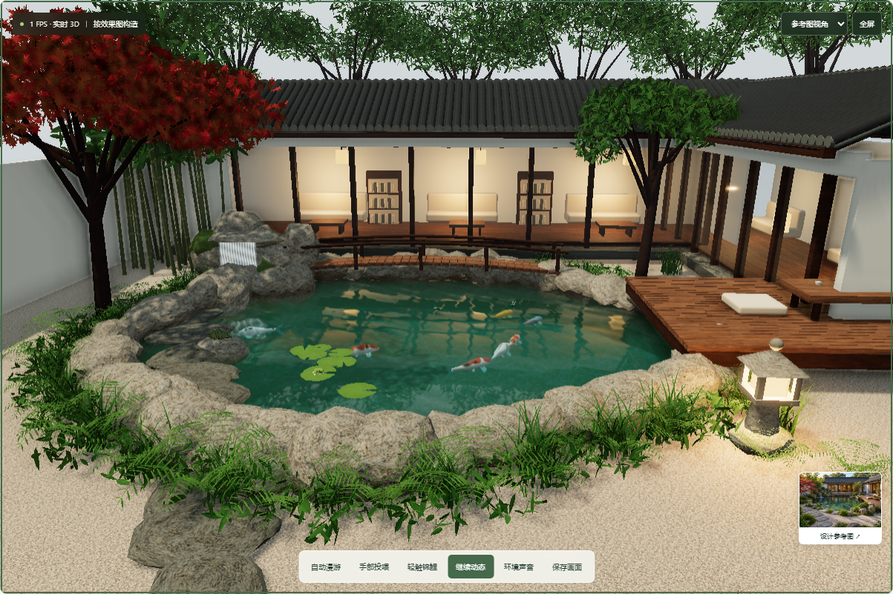

已有能力
原作本地体验；按设计图人工拆解建模；有限比例参数；模型展示、两点长度校准和水域绑定。设计图与贴图由AI生成，场景运行靠规则和GPU。
先理解原作怎样计算，再看当前实现与可扩展方向。
把熟悉的地方做成可探索、可修改，并可发展为实物的个人空间。


环境声由共享状态独立驱动，经Web Audio合成。
桥亭、池岸、植物与灯笼组成可探索空间。
可迁移：空间拆解、参数组件与自然变化。
点击、雨滴和游鱼留下扰动，风浪持续变化。
可迁移：为不同水景接入环境反馈。
水面反射庭园，水下颜色随深度变化；可选潜水。
可迁移：建立水的层次、透明感与光学表现。
18 类程序花纹、20 条鱼名册；摆尾、弯曲、张嘴和呼吸。
可迁移：共享模型上的外观变化与状态驱动动作。
群体游动、避岸、聚集，投喂后转向食物。
可迁移：可解释、可调节的群体行为。
第一人称伸手投喂、抚摸，食物落水并被吃掉。
可迁移：串联操作、角色反应和环境结果。
青蛙跳跃、乌龟入水、蜻蜓飞停；春景、梅雨、秋景、冬景。
可迁移：同一空间随天气、时间与事件变化。
自由探索、跟随镜头、光影氛围与合成环境声。
可迁移：浏览器空间展示与沉浸式讲解。
形体 · 材质 · 动作 · 行为 · 环境约束 · 用户互动
换花纹可保留鱼群规则；换庭院需重新校准和标记水域，再复用鱼水动态；换动物需适配骨骼、步态与导航。导入GLB不会自动赋予任意模型动作与智能。
原作本地体验；按设计图人工拆解建模；有限比例参数；模型展示、两点长度校准和水域绑定。设计图与贴图由AI生成，场景运行靠规则和GPU。
可作为近似参数初版的参考，补充标注与已知尺寸。背面、遮挡和进深需补依据或推测；多图扫描网格也需拆成语义组件才能局部编辑。
纪念摆件需实体化、壁厚、分件与打样；套件需接头、公差与装配；真实庭院需测量、施工图、预算与专业校核。网页网格不能直接视作制造模型。
照片 + 已知尺寸 → 结构拆解 / 参数组件 → 用户修正确认 → 数字体验 / 制造模型 → 实物打样。
照片对照轮廓、门窗、比例与位置；修改后固定确认版本；实物按版本核对尺寸、颜色与简化细节。已有参考叠加不是完整一致性验收，不能承诺单图未知部分或实体材质像素完全相同。
差异化仍需验证：乡村构件、家人参与还原、数字与实物对应；已有三维设计和房屋纪念模型服务，需要用真实用户与样品检验需求、相似度、修改工时和成本。